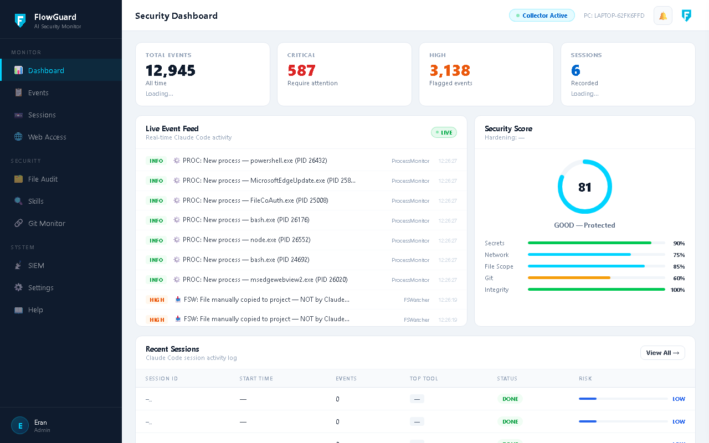

Claude Code is a very powerful AI tool — it can write code, run commands, access files, and communicate with external services. But what happens when it acts on your behalf?Claude Code הוא כלי AI חזק מאוד — הוא יכול לכתוב קוד, להריץ פקודות, לגשת לקבצים ולתקשר עם שירותים חיצוניים. אבל מה קורה ברגע שהוא פועל בשמך?
FlowGuard sits between Claude Code and your computer, monitoring every action — in real time.FlowGuard יושב בין Claude Code לבין המחשב שלך ועוקב אחרי כל פעולה — בזמן אמת.
Exampleדוגמה
Claude Code runs a curl | bash command at night that downloads a script from the internet and executes it. FlowGuard detects this and sends you an alert on Telegram.Claude Code מריץ בשעות הלילה פקודת curl | bash שמורידה סקריפט מהאינטרנט ומריצה אותו. FlowGuard מזהה את זה ושולח לך התראה לטלגרם.
⚙️ How FlowGuard worksאיך FlowGuard עובד?
🤖
Claude Code
runs actionsמבצע פעולות
→
🪝
Hook
intercepts every actionמיירט כל פעולה
→
🗄️
Collector
saves & analyzesשומר ומנתח
→
📊
Dashboard
visual interfaceממשק ניהול
Hook — registered in Claude Code settings. Every action Claude performs passes through it.רשום ב-Claude Code settings. כל פעולה שקלוד מבצע עוברת דרכו.
Collector — Node.js server running in the background (Windows Service). Receives events, saves to DB, sends alerts.שרת Node.js שרץ ברקע (Windows Service). מקבל את האירועים, שומר ל-DB, שולח התראות.
Dashboard — visual interface for viewing all activity, settings, and security analysis.ממשק ויזואלי לצפייה בכל פעילות, הגדרות, וניתוח אבטחה.
📋 What FlowGuard monitorsמה FlowGuard מנטר?
What is monitoredמה מנוטר
Detailsהסבר
Every tool Claude usesכל כלי שקלוד משתמש בו
Edit, Bash, WebFetch, Read, Write and more — all loggedEdit, Bash, WebFetch, Read, Write ועוד — כולם נרשמים
Significant anomaly — requires reviewחריג משמעותי שדורש בדיקה
GitHub Token in code, MongoDB credentialsGitHub Token בקוד, MongoDB credentials
MEDIUM
Suspicious — worth checkingמפוקפק — כדאי לבדוק
HTTP (not HTTPS), eval(), Israeli phone in codeHTTP (לא HTTPS), eval(), טלפון ישראלי בקוד
INFO
Information only — routine loggingמידע בלבד — תיעוד שגרתי
New process, session startedתהליך חדש, סשן התחיל

Dashboard Viewsתצוגות הדשבורד
Everything in one screenהכל במסך אחד
8 dedicated views — full visibility into every Claude Code action8 תצוגות ייעודיות — נראות מלאה על כל פעולת Claude Code
Viewמסך
What you'll find thereמה תמצא שם
📊 Dashboard
Overview: Today's events, severity levels, sessions, Collector status.סקירה כללית: אירועי היום, רמות חומרה, Sessions, סטטוס Collector.
📋 Events
All events that occurred — filter by level, search, and export (Last 100 / All).כל האירועים שהתרחשו — ניתן לסנן לפי רמה, לחפש, ולבחור כמות (Last 100 / All).
🎬 Sessions
Every conversation with Claude Code — start, end, number of actions performed.כל שיחה עם Claude Code — התחלה, כיום, כמה פעולות בוצעו.
🌐 Web Access
Sites Claude accessed vs. authorized sites that have been discovered.אתרים שנגשת אליהם, אתרים מאושרים vs שהתגלו חדשים.
Checking the integrity of Claude Code skills installed on the system.בדיקת תקינות הסקילים של Claude Code.
⚙️ Settings
All settings — Telegram, Quiet Hours, Exclusions, and more.כל ההגדרות — Telegram, Quiet Hours, Exclusions, ועוד.
What FlowGuard does
מה FlowGuard עושה
Security built for AI agents
אבטחה שנבנתה לסוכני AI
Claude Code has access to your files, terminal, and internet. FlowGuard makes sure you know everything it does.
ל-Claude Code יש גישה לקבצים, טרמינל ואינטרנט. FlowGuard מוודא שאתה יודע כל מה שהוא עושה.
🔍
Real-Time Event Monitoring
ניטור אירועים בזמן אמת
Every tool call Claude makes — file reads, writes, bash commands, web requests — is logged and classified instantly.
כל פעולה שקלוד מבצע — קריאת קבצים, כתיבה, פקודות bash, בקשות רשת — נרשמת ומסווגת מיידית.
🚨
Instant Telegram Alerts
התראות Telegram מיידיות
CRITICAL or HIGH risk event? You get a Telegram message within seconds. Not after the damage is done.
אירוע CRITICAL או HIGH? תקבל הודעת Telegram תוך שניות. לא אחרי שהנזק נגרם.
🛡️
Secret Detection
זיהוי סודות
API keys, passwords, credit card numbers, Israeli ID — FlowGuard catches sensitive data before it leaves your system.
מפתחות API, סיסמאות, מספרי כרטיס אשראי, ת.ז. ישראלי — FlowGuard תופס מידע רגיש לפני שהוא עוזב את המערכת.
🌐
Unauthorized Domain Detection
זיהוי גישה לדומיינים לא מורשים
AI tried to connect to an unknown server? Blocked and reported. Your network stays under your control.
ה-AI ניסה להתחבר לשרת לא מוכר? מדווח מיידית. הרשת שלך נשארת בשליטתך.
📊
Live Security Dashboard
דשבורד אבטחה חי
Beautiful dark dashboard with session timelines, risk scores, anomaly detection, and full audit trail.
דשבורד כהה עם ציר זמן של סשנים, ציוני סיכון, זיהוי חריגות ושרשרת ביקורת מלאה.
⚙️
System Tray Control
שליטה מה-System Tray
One-click to pause, mute, or disable monitoring. Stats and live status always visible in your taskbar.
לחיצה אחת להשהיה, השתקה או כיבוי הניטור. סטטוס חי תמיד גלוי בשורת המשימות.
📁
File Scope Protection
הגנת תחום קבצים
AI accessing files outside your project folder? FlowGuard flags it immediately as a HIGH risk event.
ה-AI ניגש לקבצים מחוץ לתיקיית הפרויקט? FlowGuard מסמן זאת מיידית כאירוע HIGH.
🔗
Hash Chain Integrity
שלמות שרשרת Hash
Every event is cryptographically chained. Nobody can tamper with your security log — not even the AI.
כל אירוע מקושר קריפטוגרפית. אף אחד לא יכול לשנות את לוג האבטחה — אפילו לא ה-AI.
📡
SIEM Ready (CEF/Syslog)
תואם SIEM (CEF/Syslog)
Export live events in CEF format to Splunk, Microsoft Sentinel, QRadar, or any Syslog server.
ייצוא אירועים בפורמט CEF ל-Splunk, Microsoft Sentinel, QRadar או כל שרת Syslog.
Simple setup
התקנה פשוטה
Up and running in 60 seconds
פעיל תוך 60 שניות
No configuration files. No cloud accounts. No DevOps knowledge required.
ללא קבצי קונפיגורציה. ללא חשבון ענן. ללא ידע טכני נדרש.
1
Download & Install
הורד והתקן
Run FlowGuard-Setup.exe. The wizard handles everything — hooks, services, and auto-start.
הרץ את FlowGuard-Setup.exe. האשף מטפל בכל — hooks, שירותים והפעלה אוטומטית.
2
Add Telegram (Optional)
הוסף Telegram (אופציונלי)
Enter your Telegram bot token during setup. Start receiving instant mobile alerts.
הזן את טוקן הבוט בזמן ההתקנה. קבל התראות מיידיות לנייד.
3
Use Claude Code Normally
עבוד עם Claude Code כרגיל
FlowGuard runs silently in the background. You work as usual — it watches.
FlowGuard רץ בשקט ברקע. אתה עובד כרגיל — הוא שומר.
4
Open Dashboard Anytime
פתח את לוח הבקרה בכל עת
Click the tray icon or visit localhost:3010 to see everything your AI did.
לחץ על אייקון ה-Tray או כנס ל-localhost:3010 וראה הכל.
See it in action
Live demo
Watch FlowGuard catch a real security event in the live dashboard.
FAQ
שאלות נפוצות
Frequently Asked Questions
שאלות ותשובות
Everything you need to know about FlowGuard and how it works.
כל מה שצריך לדעת על FlowGuard ואיך הוא עובד.
No. FlowGuard is monitoring-only. It never blocks or delays any AI action. Claude Code runs at full speed — FlowGuard silently hooks into the event stream, logs and classifies actions, and sends alerts. Your workflow is completely unaffected.
לא. FlowGuard הוא ניטור בלבד — הוא לא חוסם ולא מאט אף פעולה של ה-AI. Claude Code רץ במהירות מלאה, ו-FlowGuard מתחבר בשקט לזרם האירועים, מתעד ומסווג פעולות ושולח התראות. העבודה שלך לא מושפעת כלל.
Never. FlowGuard runs 100% locally. All events are stored in a local SQLite database at C:\FlowGuard\. The only outbound connection is your optional Telegram alert and the weekly rule auto-update from GitHub. No telemetry. No accounts. No cloud backend.
לעולם לא. FlowGuard רץ 100% מקומית. כל האירועים נשמרים במסד נתונים מקומי ב-C:\FlowGuard\. החיבור היחיד החוצה הוא התראות Telegram אופציונליות ועדכון כללים שבועי מ-GitHub. ללא טלמטריה. ללא חשבונות. ללא שרת ענן.
Not at all. Download the installer, run it as administrator, and the setup wizard handles everything. Node.js is bundled inside the installer — nothing else to install. You'll be monitoring in under 60 seconds.
בכלל לא. הורד את המתקין, הרץ כמנהל, והאשף מטפל בכל. Node.js כלול בתוך המתקין — אין צורך להתקין שום דבר נוסף. תהיה בניטור תוך פחות מ-60 שניות.
FlowGuard includes 69+ built-in rules organized into 6 categories: Secrets (API keys, passwords, credit cards, Israeli ID) · File Scope (access outside project folder, system files, SSH keys) · Network (unauthorized domains, suspicious POST requests, data exfiltration) · Git (unauthorized push, remote change, suspicious commit messages) · Process (PowerShell encoded commands, curl with POST, netcat, lateral movement) · Integrity (hash chain verification, skill tampering). Rules are open source on GitHub and auto-updated weekly.
FlowGuard כולל 69+ כללים מובנים המחולקים ל-6 קטגוריות: סודות (מפתחות API, סיסמאות, כרטיסי אשראי, ת.ז. ישראלית) · גישה לקבצים (גישה מחוץ לתיקיית הפרויקט, קבצי מערכת, מפתחות SSH) · רשת (דומיינים לא מורשים, בקשות POST חשודות, הדלפת מידע) · Git (push לא מורשה, שינוי remote, הודעות commit חשודות) · תהליכים (PowerShell מקודד, curl עם POST, netcat, תנועה רוחבית) · שלמות (אימות hash chain, חבלה ב-skills). הכללים הם קוד פתוח ב-GitHub ומתעדכנים אוטומטית מדי שבוע.
FlowGuard uses Claude Code's standard hooks API (PreToolUse, PostToolUse, Stop events). It is compatible with any Claude Code version that supports hooks. The setup wizard automatically registers the hooks in your ~/.claude/settings.json.
FlowGuard משתמש ב-Hooks API הסטנדרטי של Claude Code (PreToolUse, PostToolUse, Stop). הוא תואם לכל גרסת Claude Code שתומכת ב-hooks. האשף רושם אוטומטית את ה-hooks ב-~/.claude/settings.json.
During installation, the setup wizard asks for your Telegram Bot Token and Chat ID. Create a free bot via @BotFather on Telegram. Once configured, you'll receive instant mobile alerts for CRITICAL and HIGH risk events — including event type, risk level, file or command involved, and timestamp.
בזמן ההתקנה, האשף מבקש את ה-Bot Token וה-Chat ID שלך ב-Telegram. צור בוט חינמי דרך @BotFather. לאחר הגדרה, תקבל התראות מיידיות לנייד על אירועי CRITICAL ו-HIGH — כולל סוג האירוע, רמת הסיכון, הקובץ או הפקודה, וחותמת זמן.
Currently FlowGuard supports Windows 10/11 (x64). Linux support (bash installer + systemd) is planned for Q2 2026, and macOS support (.pkg + launchd) for Q3 2026. The core engine is Node.js and works cross-platform.
כרגע FlowGuard תומך ב-Windows 10/11 (x64). תמיכה ב-Linux (bash installer + systemd) מתוכננת לרבעון 2 2026, ותמיכה ב-macOS (.pkg + launchd) לרבעון 3 2026. מנוע הניטור הוא Node.js ועובד בכל פלטפורמה.
Start monitoring your AI today.
התחל לנטר את ה-AI שלך עוד היום.
Free download. Windows 10/11. Requires Claude Code CLI.
הורדה חינמית. Windows 10/11. דורש Claude Code CLI.
Eran Hershkowitz — Founder, EHZ-AIערן הרשקוביץ — מייסד, EHZ-AI
20+ years managing IT infrastructure at Israel's leading financial institutions. FlowGuard was born from real-world experience protecting sensitive data from modern AI tools.20+ שנות ניסיון בניהול תשתיות IT במוסדות פיננסיים מובילים בישראל. FlowGuard נולד מניסיון אמיתי בהגנה על מידע רגיש מפני כלי AI מודרניים.